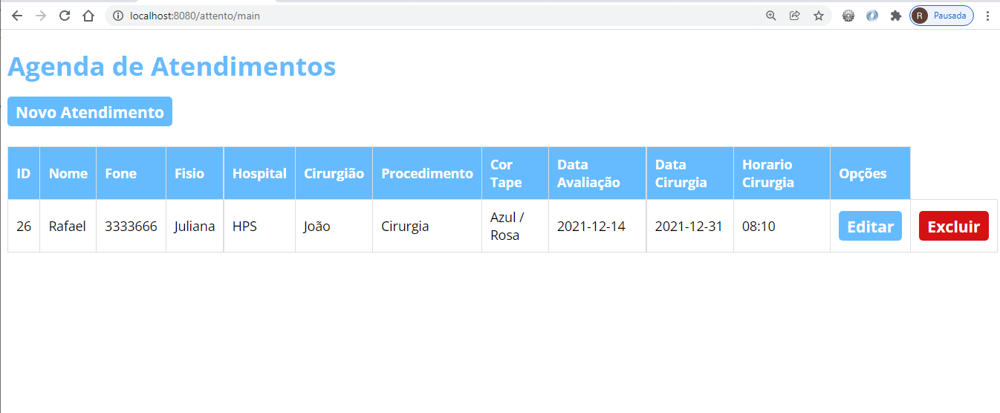

Portfólio
Projeto Pessoal Agenda Web
Aplicação Java para WEB usando Servlet, JSP, Tomcat e o banco de dados MySQL. Site inspirado em um curso do Youtube do professor José de Assis, no qual consiste em um Agendamento de Clientes de uma clinica de Fisioterapia, com edição e exclusão dos agendamentos!

Projeto Bankline App
Sistema de simulação de um extrato bancário, contendo o cadastro do correntista, inclusão de entrada e saída de valores e a listagem dos mesmos. Projeto desenvolvido na semana Santander Dev Week! Desenvolvido com Angular, HTML, CSS, TypeScript e Bootstrap.
Projeto Barbearia
Desenvolvimento de uma aplicação Desktop em Java, modelo MVC, projeto de uma Barbearia do curso do canal do Youtube While True, professor Tiago Luz.
Projeto Clinica
Desenvolvimento de uma aplicação Desktop em Java, com Banco de Dados Postgres, curso do Youtube do canal Learn Java Brasil, Professor Paulo Perrone, desenvolvimento de um sistema de uma Clinica Médica.
Projeto InfoX
Projeto de uma aplicação desktop, foi desenvolvido um sistema de orçamento, com lançamento de Ordens de Serviços aplicando os conhecimentos de Java com MySQL, curso ministrado pelo Professor José de Assis.